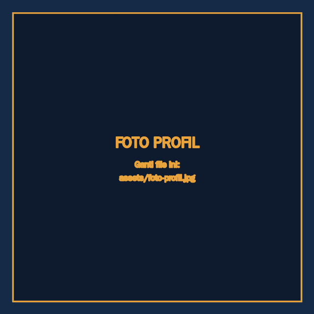

PROFIL
Ketelitian seorang filsuf, mata seorang arsitek.
Bukan sekadar menggambar — memahami dulu, baru menuangkan. Berikut rekam jejak, kemampuan, dan prinsip kerja di balik setiap garis yang dihasilkan.

Socratic Archipedence
Independent Design — AutoCAD · Revit · Enscape
Setiap bangunan bermula dari sebuah pertanyaan yang belum terjawab. Di sinilah proses dimulai — menyelami kebutuhan sebelum menggoreskan satu garis pun, menimbang proporsi seperti para arsitek klasik menimbang keindahan dan fungsi. Hasilnya: gambar kerja yang presisi di lapangan, dan visualisasi yang hidup di layar. Dipercaya oleh arsitek, kontraktor, dan pemilik proyek yang menginginkan lebih dari sekadar garis teknis.
PERANGKAT & KEAHLIAN
Software CAD & BIM
Rendering & Visualisasi
Plugin & Automasi
Tools Pendukung
PERJALANAN BERKARYA
Independent Drafter & 3D Visualizer
Menangani gambar kerja AutoCAD, pemodelan Revit, dan render Enscape secara mandiri — dari klien perorangan hingga kontraktor kecil, dengan pendekatan yang sama telitinya di setiap skala proyek.
Junior Drafter — Konsultan Tidak Terdaftar
Mengasah dasar-dasar drafting profesional: menyiapkan gambar kerja, menangani revisi, dan memahami standar dokumentasi proyek konstruksi.
LATAR PENDIDIKAN
Universitas Bina Bangsa
Teknik Sipil — Masuk 2025